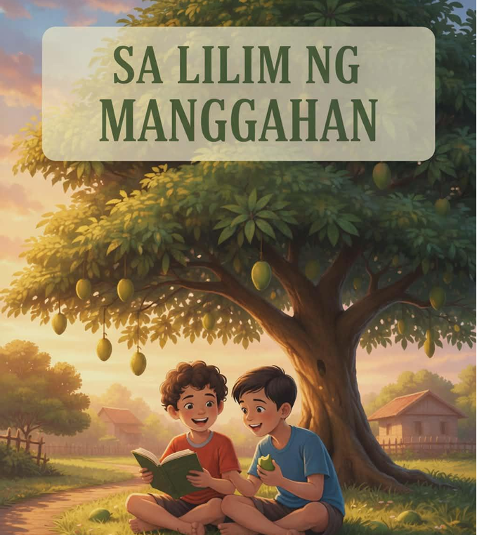

Asignatura: Filipino
Baitang: Senior High School
Paksa: Maikling Kuwento
Pamagat: Sa Lilim ng Manggahan
Estratehiya: Mapa ng Kuwento (Story Map)
Kung ikaw ay may pangarap na hindi gusto ng iyong magulang o lolo/lola, ipaglalaban mo ba ito? Bakit?
Panuto: Ipares ang salita sa Hanay A sa tamang kahulugan sa Hanay B.
Hanay B
Hanay B
A. Daluyan ng tubig sa bukid
B. Antas ng kalagayang panlipunan
C. Lalagyan ng ani
D. Bakas ng paa / talinghaga sa pagsunod
E. Komunidad ng mga tao
Basahin ang maikling kwento at sagutin ang mga tanong at gawain sa ibaba.

Sa Lilim ng Manggahan
Sa isang malawak na hacienda sa lalawigan, magkatabing lumaki sina Miguel at Tomas. Si Miguel ay apo ni Mang Isko, ang nagmamay-ari ng pinakamalaking manggahan sa kanilang bayan. Samantalang si Tomas naman ay anak ng isang mahirap na manggagawa sa bukid na matagal nang namamasukan sa hacienda. Magkaiba man ang kanilang katayuan sa buhay, iisa ang tibok ng kanilang puso sa tuwing sila’y nagtatakbuhan sa lilim ng matatandang punong mangga, nagbabahagi ng tinapay, at nangangarap tungkol sa hinaharap.
Mula pagkabata, malinaw na ang nais ni Mang Isko para sa kanyang apo. “Ikaw ang magmamana ng manggahan, Miguel,” madalas niyang sabihin. “Ikaw ang magpapatuloy ng ating sinimulan.” Ngunit sa puso ni Miguel ay may ibang pangarap na umuusbong, ang maging inhinyero. Gusto niyang matutong magdisenyo ng mga tulay at irigasyon upang makatulong sa mga magsasaka sa kanilang lugar.
Hindi naging madali ang desisyon ni Miguel. Alam niyang masasaktan ang kanyang lolo, subalit buo ang kanyang loob. Sa tulong ng pagsusumikap at ilang iskolarship, nakapagtapos siya ng pag-aaral. Habang si Miguel ay nasa lungsod, nanatili si Tomas sa hacienda. Kahit mahirap ang buhay, hindi niya iniwan ang manggahan. Tinulungan niya si Mang Isko sa pangangasiwa mula sa pag-aayos ng irigasyon, pakikipag-usap sa mga manggagawa, hanggang sa pagbabantay ng ani tuwing anihan. Unti-unti, natutunan ni Tomas ang bawat sulok ng manggahan, pati ang ugali ng lupa at takbo ng panahon.
Nang makapagtapos si Miguel bilang inhinyero, bumalik siya sa hacienda dala ang tuwa at pag-asang maibahagi ang kanyang natutunan. Ngunit sinalubong siya ng mabigat na balita. Nagkasakit si Mang Isko at hindi na kayang pangasiwaan ang buong manggahan. Kinailangan ng taong maaaring tumulong sa pamamahala nito.
Hindi nag-atubili si Tomas. Kahit wala siyang pormal na pinag-aralan, dala niya ang karanasan at malasakit. Araw-araw niyang inaalagaan ang manggahan habang inaalagaan din ang lolo ng kanyang kaibigan. Nang makita ni Miguel ang ginagawa ni Tomas, napuno ng pasasalamat ang kanyang dibdib. Doon niya napagtantong hindi lamang dugo ang nagmamana ng responsibilidad kundi ang pusong handang maglingkod.
Pinagsama ni Miguel ang kanyang kaalaman bilang inhinyero at ang karanasan ni Tomas sa bukid. Nagpagawa sila ng mas maayos na daluyan ng tubig, inayos ang imbakan ng ani, at naglatag ng plano para sa mas makatarungang sahod ng mga manggagawa. Unti-unting bumuti ang ani ng manggahan, at gumaan ang buhay ng mga taong umaasa rito. Isang hapon, habang nakaupo si Mang Isko sa ilalim ng punong mangga, pinagmamasdan ang dalawang magkaibigang abala sa pagpaplano, napangiti siya. “Hindi ka man sumunod sa yapak ko, Miguel,” mahinang sabi niya, “mas malayo ang narating mo. At si Tomas… ikaw ang patunay na ang tunay na tagapagmana ng lupa ay ang taong nagmamahal dito.”
Sa lilim ng manggahan, napagtanto nina Miguel at Tomas na ang pangarap ay hindi kailangang magsarili. Maaaring magkaiba ang landas, ngunit kapag pinagsama ang kaalaman, sipag, at malasakit, mas nagiging matibay ang hinaharap—hindi lamang para sa kanila, kundi para sa buong pamayanan.
Aral: Ang tunay na tagumpay ay hindi nasusukat sa kung sino ang nagmamay-ari, kundi sa kung sino ang handang magmalasakit at maglingkod. Ang pangarap ay mas nagiging makabuluhan kapag ginagamit para sa kapakanan ng iba.
Panuto: Punan ang bawat bahagi batay sa iyong pag-unawa sa kuwento.
Panuto: Sagutin ang sumusunod sa 1–2 pangungusap:
1. Bakit hindi agad nasunod ni Miguel ang nais ng kanyang lolo?
Paano ipinakita ni Tomas ang kanyang malasakit sa manggahan at kay Mang Isko??
3. Ano ang ipinapakita ng pagtatapos ng kuwento tungkol sa pagkakaibigan?
Panuto: Sumulat ng maikling talata tungkol sa kung paano mo gagamitin ang iyong pangarap o kakayahan upang makatulong sa iba, tulad ng ginawa nina Miguel at Tomas.
Pamantayan sa Pagmamarka (Rubric – Maikli)
❖ Nilalaman at Mensahe (5 pts) – malinaw na naipakita ang ideya ng
kapayapaan at pag-aalaga
❖ Pagkamalikhain (5 pts) – orihinal ang ideya at presentasyon
❖ Kalinisan at Ayos (5 pts) – maayos ang gawa at malinaw ang
sulat/guhit
❖ Pagsunod sa Panuto (5 pts) – nasunod ang napiling gawain
❖ Kabuuan: 20 puntos
Panuto: Kumpletuhin ang pangungusap:
Mula sa kuwento, natutunan ko na :
at magagamit ko ito sa aking buhay sa pamamagitan ng